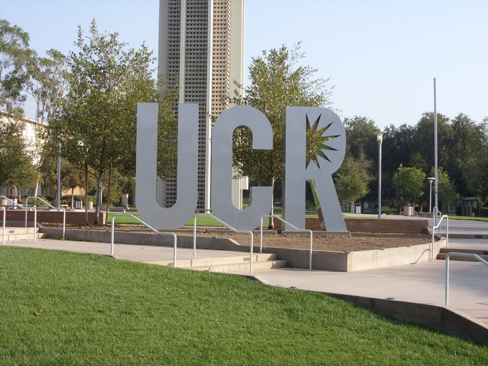

Chan Mariserla
Business Operations Manager
I've been a strong follower and admirer of the business environment for as long as I can remember. Coinciding with that, I’ve always felt the weight of responsibility and the weight of decisions as something I’m good at handling, despite the amount of pressure on me. That’s not to say that I’m a control freak or am super bossy, but rather that in a co-op environment, I would put my team working skills to use effectively. This is to the point that all team members and co-operators feel comfortable with workloads or jobs and tasks. That’s how I would be vital in coordinating and operating a team in an office setting, providing satisfaction and success to a company and all its employees at the same time.
For as long as I can remember, I've been a great supporter and fan of the business world. Similarly, despite the amount of strain on me, I've always viewed the weight of responsibility and the weight of decisions as something I'm adept at handling. That's not to suggest I'm a control freak or overbearing, but in a co-op setting, I'd be able to put my team-building skills to good use. This has reached the stage where all team members and collaborators are at ease with workloads, jobs, and tasks. That's how I'd be crucial in coordinating and managing a team in an office setting, ensuring the company's and all of its employees' contentment and success.
Since I can remember, I've been a strong supporter and admirer of the business sector. Similarly, despite the pressures I've been under, I've always seen the weight of responsibility and the weight of decisions as something I can handle. That's not to say I'm a control freak or overbearing, but I'd be able to put my team-building talents to good use in a co-op context. This has progressed to the point that all members of the team and collaborators are comfortable with their responsibilities, jobs, and tasks. That's how I'd be critical in coordinating and directing a team in an office, ensuring the company's and all of its employees' happiness and success.
Experience
FBLA MEMBER
• Attended conventions
• learned from eladership conferences
• Communication skills learned
Teacher's Assisstant
• Ran sessions to help students learn how to communicate wiht others
• Developed social skills in teenagers
• Created informative content for students
Education
UC Riverside
Portfolio
